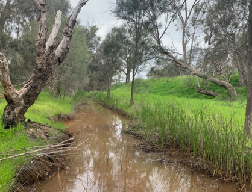
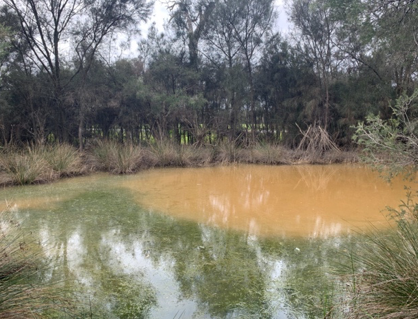
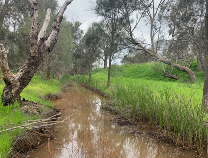
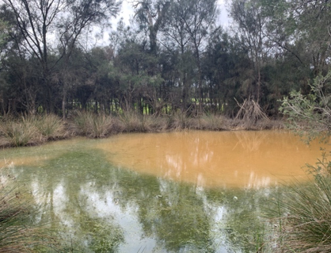

Exercise 1B Part 2: Helena River Site Visit

Background
The degradation of freshwater systems by increasing salinity is a major challenge facing Western Australia. Salinisation of the Avon river, which enters the Upper Swan river at Walyunga National Park, arose due to poor land-management leading to secondary salinity in the inland wheatbelt catchments. Whilst secondary salinity is not an issue in the Swan Coastal Plain where our site visit is, the salt loads from the Avon in addition to rising sea levels and decreasing rainfall trend have been driving changes in the seasonal movement of marine waters, with increasing penetration of the salt wedge further inland from the ocean (Huang et al. 2018).
Salinisation of river systems can cause shifts in floodplain vegetation which arise because of river water interaction with the floodplain. Depending on the salinity increase and the salt tolerance of the floodplain tree species, this can cause shifts in community structure. One important species that has a natural range along the Swan river and its tributaries is the Eucalyptus rudis. This species has been reported to be in decline for over 15 years along the Swan river (Clay & Majer 2001), and more recently along one of the tributaries of the Swan river: the Guildford floodplains of the Helena river (Dundas 2011). It is currently unknown the exact role of water availability and salinity in the observed decline, and alternate hypothesis related to tree pathogens (e.g. Phytophthora) are also as drivers of decline are also under investigation.
E. rudis plays a vital role in the riparian ecosystem. Riparian woodland species are important filters that reduce nutrient transfers from the land into the river, which is a significant issue in the Swan river and its tributaries (excessive nutrients have historically resulted in noxious algal blooms). There is therefore a need to better understand what drives decline and if projected drying conditions for the region will make the pressures worse.
This site visit allows students to experience how hydrologic monitoring of surface- and ground-water systems can help us build a conceptual understanding of how ecosystems are working, and to link this to management challenges that require a solution. The data being collected will help us understand the drivers of decline of E. rudis in relation to the changing hydrology regime at the Guildford floodplains along the Helena river. This site is part of a long-term research investigation being undertaken with the WA Department of Biodiversity, Conservation and Attractions (DBCA) and UWA and your data will contribute to our database.
During our visit, we will describe the site by considering hydrologic pathways (surface and sub-surface), and collect data to assess water and salt distribution in this floodplain system.
You will be shown around the site to explain the basic surface and groundwater processes occurring, and in groups you will:
- Identify the surface water flow regime.
- Observe soils and their hydraulic properties.
- Undertake salinity data collection from groundwater wells (piezometers) and surface waters, and from soils within the tree root zone.
- Conceptualise the hydrologic processes influencing salt movement and accumulation across the site
- Identify the distressed and dead trees and consider how hydrology may or may not be abel to explain this issue

Figure 17: High-resolution LIDAR image of the surface topography of the Helena River study site in Guildford. The red-circles indicate groundwater observation wells.
Helena River Floodplain Field Visit Tasks: For those attending in-person
On arrival
Arrive at the carpark near King’s Meadow Oval. Firstly check-in with an instructor and get your bearings. You will take a pack with you, and other equipment you will see at the stations.

During your site visit you will be instructed to follow the tasks below and record your data in the download sheet . If in doubt, please ask for assistance. You will undertake 4 main activities. Note that each participant is expected to make a short video of one of these tasks (see Submission section at the end).
Task A – Surface Water Flows and Salinity
- Explore the site, considering the surface water pathways.
- Be able to identify flow direction in the main waterways bounding the site (Swan River to the west and Helena River to the south-east).
- Be able to identify water accumulation areas within the site itself.
- Consider the horizontal and vertical movement pathways of this water.
- Identify Eucalyptus rudis trees and their health in context of the landscape.
 



Measure at two contrasting locations surface water salinity, and on the data sheet. Include the GPS locations. Take one from East of the bridge, and one from the West. You can Take them from Helena or Swan river, and one from an internal site. We will collate data from students to make a class data summary. Use waders provided for deeper waters – use a stick/ruler to judge depth of water before taking steps and do not enter into fast-running water above knee height.

Figure 18: Example inundation pattern. Which way is the water flowing?
Task B – Helena River Flow
Navigate to the Helena River, where it flows under the Bridge. Undertake a stream gauging measurement to determine the river flow. Refer to the Streamflow lab “Velocity-Area method.”
Task C – Groundwater sampling
Visit two of the existing piezometer wells (refer to map below, consult instructor for locations if you cant find them). Note the Well Identification Number.


Record results from the following tasks:
- Record the depth from the water to the top of the casing. Use the “dipper” provided.
- Record the depth from the Top of the Casing (TOC) to the ground level.
- “Bail the well” with the bailer, and take a sample of the water for salinity determination (measure EC of the groundwater).
- Consider the hydraulic slope – how do you think the height of the water table varies along the transect. Try sketching a cross-section along the transect, and consider how you would apply Darcy’s Law.
Task D – Soil salinity
In this task we want to expand our data beyond the transect of bores more widely. Identify a soil/groundwater sampling location away from the piezometer transect – including on the east side of the bridge (consult instructor for guidance). Take an exact GPS reading to log your site. Split the tasks below between your team mates:
- Measure the soil salinity of a sample at the surface, and 20 cm below the surface. Note soil salinity measurement is different from the water salinity measurement.
- Use the hand auger, drill to reach the water table (~ 50cm) below the surface (this may vary depending on the exact site chosen). Carefully extract the soil, without the hole collapsing. Once settled (~5-10mins), take an EC reading of the water pooling in the bottom, and note the water level below the ground surface. Take caution the depth is accurate relative to the pre-disturbed surface.
- [OPTIONAL] Whilst the above is being done, in a nearby location, prepare a flat soil surface and undertake an infiltration assessment with the Decagon infiltrometer. Notie the infiltration volume for later entry into the Decagon spreadsheet. You will need to note the soil type, based on your observation.
Helena River Floodplain Field Visit Tasks: For those undertaking online
Task Z
For those not attending the site visit in person, your activity will be to learn about the site by reviewing prior analyses that have been undertaken and looking at historical data for the site. You will additionally be able to see specific aspects of the site by reviewing the short videos made by participants who report on Tasks A-D.
Make a summary of the past investigations by reading through the recent report on the site:

Mapping EC in QGIS
Now that we have collected our data, let’s create a map to visualise the variation in EC over the study site. We will need QGIS for this exercise, if you don’t already have it installed on your computer you can download it here.
- Let’s start by importing our EC point data. Go to Layer -> Add Layer -> Add Delimited Text Layer.
- Under File name navigate to your csv of the EC data
- Make sure under File Format ‘CSV’ is selected
- Under Geometry Definition set the X field to the Easting column of you EC data and the Y field to the Northing column
- Set the Geometry CRS to “EPSG:32750 - WGS84/UTM zone 50S”
- Click Add

Figure 19: Importing your EC data.
You’ll now see the point data added to your screen, however, we have no spatial context - let’s add a basemap.
Go to the QuickMapServices (QMS) button in the toolbar and browse/search for a basemap that you think would be appropriate (e.g. search “satellite” and browse the different satellite basemap providers).
Add one to the map.
Figure 20: The QMS buttons in the QGIS toolbar.
Now we have a basemap and our points - let’s change the symbology of the points to better communicate the variation in EC.
- Right click on the point data in the layer window and go Properties -> Symbology.
- Set the symbol type to Graduated and specifying the values to graduate by as our EC column.
- Now set the Method to Size, and the Mode to Natural Breaks (Jenks), click Classify.

Figure 21: Changing the symbology of our point data.
Now when you click Apply the point size is weighted to the EC. You can further refine your symbology by changing the point colours and size - think about how best to communicate variation in EC.
- Finally, create a map output by clicking the New Layout button in the toolbar. If you aren’t familiar with creating maps in QGIS work with one of your classmates who is, or read through the second half of this tutorial.

Figure 22: Example map from your QGIS output.
Submission
- Vignette (5 marks): Each participant will record a video summary of a chosen TASK (A-Z). The video should take 1min to explain the context, and describe the method relevant to that task. It is aimed at your fellow peers, such that even without attending the site, they can understand the general issues and the reason for approach being taken. A guide as to what the summary should include is shown in the following:
- A statement setting the broad context and setting
- A description of the issue being assessed, and why it is relevant to do the relevant task/measurements
- An overview of the method
- A statement about how this data can be used to improve our understanding of the site and help management
- Note: the Vignette is due to be uploaded by 10am Monday 31st August
- Peer review (3 marks):
- Note: the Peer review will be completed by 5pm Friday 4th September
- Site Assessment report (12 marks):
- Note: the Site Assessment report is due to be uploaded by 5pm Tuesday 15th September